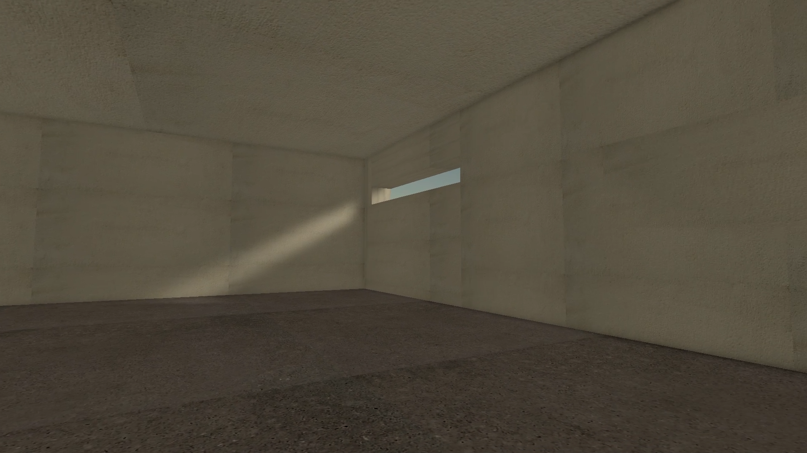
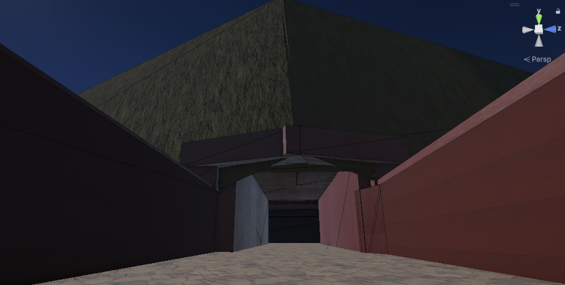
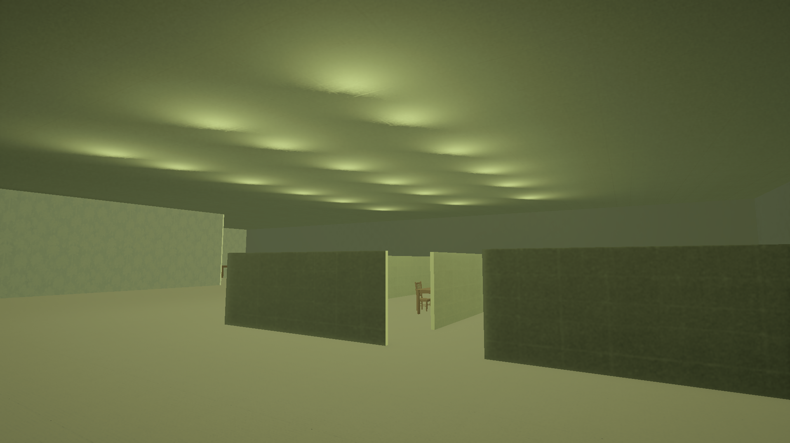

01
The Observer
An environmental experience exploring observation, atmosphere, and spatial awareness.
View ProjectCOMM2747 / COMM2591 / COMM2589
A final portfolio documenting my development across the semester through interactive works, spatial experiments, and reflective design practice.
Overview
This website collects three interactive and environmental works created across the semester. Together, they show how my practice developed from basic spatial construction toward more considered interaction, atmosphere, player behaviour, and conceptual design.
Works

01
An environmental experience exploring observation, atmosphere, and spatial awareness.
View Project
02
A liminal space experience exploring transition, uncertainty, and spatial boundaries.
View Project
03
An interactive experience exploring obedience, control, and behavioural conditioning.
View ProjectReflection
Placeholder reflection about early technical experiments and initial understanding of interactive environments.
Placeholder reflection about atmosphere, space, visual design, and environmental storytelling.
Placeholder reflection about using interaction, sound, camera, and spatial restriction to shape player behaviour.
Research